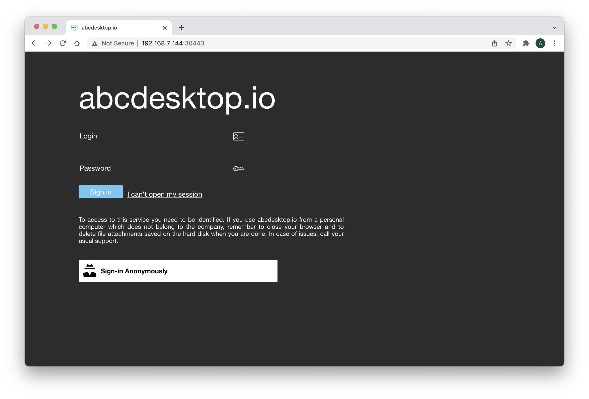
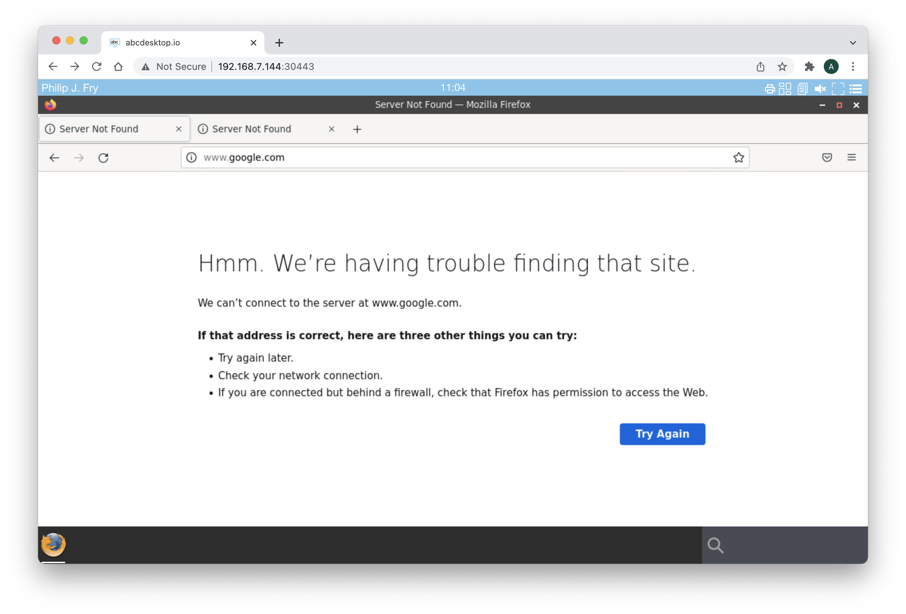

Setup guide to use abcdesktop.io as bastion service
Design
The goal of this setup guide is to install abcdesktio.io as a bastion service, with only one virtual machine
script and vagrant file
get script and vagrant file
To get the installation script and the vagrant file, run the command
git clone https://github.com/abcdesktopio/vagrant.git
- The vagrant file name is
Vagrantfile.kubernetes.bastion - The installation script is
abcdesktop_kubernetes_bastion.sh
start vagrant file to run the kmaster vm
Run the command to run the vagrant file
$ cd vagrant
$ VAGRANT_VAGRANTFILE=Vagrantfile.kubernetes.bastion vagrant up
This vagrant file defines a vm kmaster :
kmaster.vm.box = "hashicorp/bionic64"
kmaster.vm.hostname = "kmaster.example.com"
# By default, Vagrant uses a netmask of 255.255.255.0
# config.vm.network :hostonly, "10.11.12.13", :netmask => "255.255.0.0"
kmaster.vm.network "private_network", ip: "172.42.42.100"
kmaster.vm.network "private_network", ip: "10.9.1.100", virtualbox__intnet: true
kmaster.vm.network "private_network", ip: "192.168.29.100", virtualbox__intnet: true
kmaster.vm.network "forwarded_port", guest: 30443, host: 30443
kmaster.vm.provider "virtualbox" do |v|
v.name = "kmaster"
v.memory = 4096
v.cpus = 4
end
kmaster.vm.provision "shell", path: "abcdesktop_kubernetes_bastion.sh"
It forward the host tcp port 30443 to guest port 30443 ( mapped as a host port in kubernetes )
All networks are defined as private_network to make it simplest as possible.
abcdesktop_kubernetes_bastion.sh description
abcdesktop_kubernetes_bastion.sh takes more than eight minutes to install all services, from an ubuntu bionic 64 hashicorp/bionic64 :
- kubernetes
- abcdesktop
- multus-cni
- multi-networkpolicy
Read step by step the abcdesktop_kubernetes_bastion.sh content to get more details.
You can read the vagrant stdout file as example abcdesktop kubernetes bastion install log file
login to get a ssh into the kmaster vm
VAGRANT_VAGRANTFILE=Vagrantfile.kubernetes.bastion vagrant ssh
List
kube-systempods andabcdesktoppods
To run kubectl commands inside the master virtual machine
export KUBECONFIG=/etc/kubernetes/admin.conf
vagrant@kmaster:~$ kubectl get pods -n kube-system
NAME READY STATUS RESTARTS AGE
coredns-64897985d-4d57p 1/1 Running 0 11h
coredns-64897985d-qtmkq 1/1 Running 0 11h
etcd-kmaster 1/1 Running 0 11h
kube-apiserver-kmaster 1/1 Running 0 11h
kube-controller-manager-kmaster 1/1 Running 0 11h
kube-flannel-ds-gskrs 1/1 Running 0 11h
kube-proxy-c566l 1/1 Running 0 11h
kube-scheduler-kmaster 1/1 Running 0 11h
vagrant@kmaster:~$ kubectl get pods -n abcdesktop
NAME READY STATUS RESTARTS AGE
daemonset-nginx-pt2j6 1/1 Running 0 11h
daemonset-pyos-zqpf7 1/1 Running 0 11h
memcached-od-78578c879-kstcl 1/1 Running 0 11h
mongodb-od-5c68794bb8-wf6sm 1/1 Running 0 11h
openldap-od-558f7959d5-vhbln 1/1 Running 0 11h
speedtest-od-7b66cc656b-fh97g 1/1 Running 0 11h
Login as a user
Connect your local abcdesktop
Open your web browser to
http://[your-ip-hostname]:30443/
Replace
[your-ip-hostname]by the host node IP address
You should get the web page

Log in as
abcdesktop adds an OpenLDAP server for testing LDAP applications, i.e. unit tests. The ldap server is used to authenticate user. To get more informations about the OpenLDAP server and the account detail, read ldap server
| Login Accounts | Login Password |
|---|---|
| Hubert J. Farnsworth | professor |
| Philip J. Fry | fry |
| Hermes Conrad | hermes |
| Turanga Leela | leela |
| Bender Bending Rodrguez | bende |
Use the credentials, to login
- Login Account:
Philip J. Fry - Login Password:
fry
Get the default desktop
After the login, you should get the default desktop.

Run a web shell process
To start a shell, insert webshell as keywords in the search text area :

Run ifconfig command to list network interfaces
In the web shell, run the command
$ ifconfig -a

This command shows the network interfaces net1 and net2 with the associated ip address
Tag and rules
- Login into your
kmaster
VAGRANT_VAGRANTFILE=Vagrantfile.kubernetes.bastion vagrant ssh
- Become root into your
kmaster
vagrant@kmaster:~$ sudo bash
Config file abcdesktop.yaml
Open the abcdesktop.yaml configuration file, and look at ldapconfig
ldapconfig : { 'planet': { 'default' : True,
'ldap_timeout' : 15,
'ldap_protocol' : 'ldap',
'ldap_basedn' : 'ou=people,dc=planetexpress,dc=com',
'servers' : [ 'openldap.abcdesktop.svc.cluster.local' ],
'secure' : False,
'serviceaccount': { 'login': 'cn=admin,dc=planetexpress,dc=com', 'password': 'GoodNewsEveryone' },
'policies': {
'acls': None,
'rules' : {
'rule-ship': { 'conditions' : [ { 'memberOf': 'cn=ship_crew,ou=people,dc=planetexpress,dc=com', 'expected' : True } ], 'expected' : True, 'label': 'shipcrew' },
'rule-test': { 'conditions' : [ { 'memberOf': 'cn=admin_staff,ou=people,dc=planetexpress,dc=com', 'expected' : True } ], 'expected' : True, 'label': 'adminstaff' } } } } }
openldap.abcdesktop.svc.cluster.localis a local ldap server running as a pod
Rules description
-
'rule-ship': { 'conditions' : [ { 'memberOf': 'cn=ship_crew,ou=people,dc=planetexpress,dc=com', 'expected' : True } ], 'expected' : True, 'label': 'shipcrew' }If a user is member of'cn=ship_crew,ou=people,dc=planetexpress,dc=com'then thelabeltagshipcrewis set to the user's pod -
'rule-admin': { 'conditions' : [ { 'memberOf': 'cn=admin_staff,ou=people,dc=planetexpress,dc=com', 'expected' : True } ], 'expected' : True, 'label': 'adminstaff' }If a user is member of'cn=admin_staff,ou=people,dc=planetexpress,dc=com'then thelabeltagadminstaffis set to the user's pod
In the abcdesktop.yaml configuration file, and look at the desktop.policies and the network option
desktop.policies: {
'rules': {
'network': {
'shipcrew': {
'annotations' : {
'k8s.v1.cni.cncf.io/networks': '[ {"name":"macvlan-conf-eth3"}, { "name":"macvlan-conf-eth2", "default-route": ["10.9.1.100"] } ]'
}
}
}
},
'acls' : {} }
If a pod as the 'shipcrew' tag, then add the network annotations
[
{ "name": "macvlan-conf-eth3"},
{ "name": "macvlan-conf-eth2", "default-route": ["10.9.1.100"] }
]
List pods and labels in abcdesktop namespace
To list pod in the abcdesktop namespace, run the command
export KUBECONFIG=/etc/kubernetes/admin.conf
kubectl get pods -n abcdesktop
root@kmaster:~# export KUBECONFIG=/etc/kubernetes/admin.conf
root@kmaster:~# kubectl get pods -n abcdesktop
NAME READY STATUS RESTARTS AGE
daemonset-nginx-5dzjc 1/1 Running 0 151m
daemonset-pyos-szs8h 1/1 Running 0 151m
fry-02579a7f-a464-4cdb-bb79-5d4d4a844308 3/3 Running 0 86m
memcached-od-78578c879-vx26h 1/1 Running 0 151m
mongodb-od-6568f85897-tgfjb 1/1 Running 0 151m
openldap-od-558f7959d5-qz2kg 1/1 Running 0 151m
speedtest-od-76d578578d-rl8k8 1/1 Running 0 151m
Describe pods fry
Run the command
kubectl describe pods YOUR_POD
Replace YOUR_POD by your pod
root@kmaster:~# kubectl describe pods fry-02579a7f-a464-4cdb-bb79-5d4d4a844308 -n abcdesktop
Name: fry-02579a7f-a464-4cdb-bb79-5d4d4a844308
Namespace: abcdesktop
Priority: 0
Node: kmaster/10.0.2.15
Start Time: Mon, 31 Jan 2022 16:14:16 +0000
Labels: access_provider=planet
access_userid=FRY
access_username=philip_j__fry
broadcast_cookie=f7ee45615acce9c5fbed2607d35471264d6c6c14b5cd5778
domain=desktop
netpol/ocuser=true
pulseaudio_cookie=f7cfdfb7b4227e816f3ad59f9d122fac49674a1a60455951
shipcrew=true
type=x11server
xauthkey=ad9e3675cb184db9b6c9eee4852a94est-od-76d578578d-rl8k8
The label
shipcrew=trueis set
Annotations: k8s.v1.cni.cncf.io/network-status:
[{
"name": "cbr0",
"interface": "eth0",
"ips": [
"10.244.0.12"
],
"mac": "06:17:a7:0c:24:9b",
"default": true,
"dns": {}
},{
"name": "abcdesktop/macvlan-conf-eth3",
"interface": "net1",
"ips": [
"192.168.29.12"
],
"mac": "3a:db:a1:33:53:72",
"dns": {}
},{
"name": "abcdesktop/macvlan-conf-eth2",
"interface": "net2",
"ips": [
"10.9.1.12"
],
"mac": "86:eb:43:fe:db:e7",
"dns": {}
}]
The
Annotationsk8s.v1.cni.cncf.io/network-statusdescribes the network interfaces inside the pod.
Look at the pre installed network rules
Run the command
kubectl get net-attach-def -n abcdesktop
root@kmaster:~# kubectl get net-attach-def -n abcdesktop
NAME AGE
macvlan-conf-eth2 154m
macvlan-conf-eth3 154m
Get more details about macvlan-conf-eth3
root@kmaster:~# kubectl describe net-attach-def macvlan-conf-eth3 -n abcdesktop
Name: macvlan-conf-eth3
Namespace: abcdesktop
Labels: <none>
Annotations: <none>
API Version: k8s.cni.cncf.io/v1
Kind: NetworkAttachmentDefinition
Metadata:
Creation Timestamp: 2022-01-31T15:10:38Z
Generation: 1
Managed Fields:
API Version: k8s.cni.cncf.io/v1
Fields Type: FieldsV1
fieldsV1:
f:metadata:
f:annotations:
.:
f:kubectl.kubernetes.io/last-applied-configuration:
f:spec:
.:
f:config:
Manager: kubectl-client-side-apply
Operation: Update
Time: 2022-01-31T15:10:38Z
Resource Version: 1008
UID: a5b0d3a0-52c4-42da-887b-8de73cff2b1c
Spec:
Config: { "cniVersion": "0.3.0", "type": "macvlan", "master": "eth3", "mode": "bridge", "ipam": { "type": "host-local", "subnet": "192.168.29.0/24", "rangeStart": "192.168.29.10", "rangeEnd": "192.168.29.99", "gateway": "192.168.29.100" } }
Events: <none>
macvlan-conf-eth3is used by the user's pod.
List multi-policy
To list multi-policy, run the command
kubectl get multi-policy -n abcdesktop
root@kmaster:~# kubectl get multi-policy -n abcdesktop
NAME AGE
mnp-permit-shipcrew 3h
And get description about the policy mnp-permit-shipcrew
apiVersion: k8s.cni.cncf.io/v1beta1
kind: MultiNetworkPolicy
metadata:
name: mnp-permit-shipcrew
namespace: abcdesktop
annotations:
k8s.v1.cni.cncf.io/policy-for: macvlan-conf-eth3
spec:
podSelector:
matchLabels:
shipcrew: 'true'
policyTypes:
- Egress
egress:
- to:
- ipBlock:
cidr: 192.168.55.21/32
- ipBlock:
cidr: 192.168.55.22/32
ports:
- protocol: TCP
port: 22
If a pod in the
abcdesktopnamespace, contains a labelshipcrew: 'true'set theiptablesto permit egress to host192.168.55.21/32and192.168.55.22/32using protocolTCPdestination port22.
dump the generated by iptables in /var/lib/multi-networkpolicy/iptables/
- Login into your
kmaster
VAGRANT_VAGRANTFILE=Vagrantfile.kubernetes.bastion vagrant ssh
- Become root into your
kmaster
vagrant@kmaster:~$ sudo bash
- list the directories
/var/lib/multi-networkpolicy/iptables/inkmaster
root@kmaster:~# ls /var/lib/multi-networkpolicy/iptables/
afe82680-77b4-4bac-ad2b-8be9488402fb
A new afe82680-77b4-4bac-ad2b-8be9488402fb exists
- cat the
current.iptablesfile content in the/var/lib/multi-networkpolicy/iptables/ afe82680-77b4-4bac-ad2b-8be9488402fb
root@kmaster:~# cat /var/lib/multi-networkpolicy/iptables/afe82680-77b4-4bac-ad2b-8be9488402fb/current.iptables
# Generated by iptables-save v1.4.21 on Mon Jan 31 16:16:22 2022
*mangle
:PREROUTING ACCEPT [441:57462]
:INPUT ACCEPT [441:57462]
:FORWARD ACCEPT [0:0]
:OUTPUT ACCEPT [370:150632]
:POSTROUTING ACCEPT [367:150476]
COMMIT
# Completed on Mon Jan 31 16:16:22 2022
# Generated by iptables-save v1.4.21 on Mon Jan 31 16:16:22 2022
*filter
:INPUT ACCEPT [0:0]
:FORWARD ACCEPT [0:0]
:OUTPUT ACCEPT [0:0]
:MULTI-0-EGRESS - [0:0]
:MULTI-0-EGRESS-0-PORTS - [0:0]
:MULTI-0-EGRESS-0-TO - [0:0]
:MULTI-EGRESS - [0:0]
:MULTI-INGRESS - [0:0]
-A INPUT -i net2 -j MULTI-INGRESS
-A INPUT -i net1 -j MULTI-INGRESS
-A OUTPUT -o net2 -j MULTI-EGRESS
-A OUTPUT -o net1 -j MULTI-EGRESS
-A MULTI-0-EGRESS -j MARK --set-xmark 0x0/0x30000
-A MULTI-0-EGRESS -j MULTI-0-EGRESS-0-PORTS
-A MULTI-0-EGRESS -j MULTI-0-EGRESS-0-TO
-A MULTI-0-EGRESS -m mark --mark 0x30000/0x30000 -j RETURN
-A MULTI-0-EGRESS -j DROP
-A MULTI-0-EGRESS-0-PORTS -o net1 -p tcp -m tcp --dport 22 -j MARK --set-xmark 0x10000/0x10000
-A MULTI-0-EGRESS-0-TO -d 192.168.55.21/32 -o net1 -j MARK --set-xmark 0x20000/0x20000
-A MULTI-0-EGRESS-0-TO -d 192.168.55.22/32 -o net1 -j MARK --set-xmark 0x20000/0x20000
-A MULTI-EGRESS -o net1 -m comment --comment "policy:mnp-permit-shipcrew net-attach-def:abcdesktop/macvlan-conf-eth3" -j MULTI-0-EGRESS
COMMIT
# Completed on Mon Jan 31 16:16:22 2022
# Generated by iptables-save v1.4.21 on Mon Jan 31 16:16:22 2022
*nat
Add some applications to your desktop
For abcdesktop a desktop application is a container image. To add an application you just need to pull an container image.
- Login into your
kmaster
VAGRANT_VAGRANTFILE=Vagrantfile.kubernetes.bastion vagrant ssh
- Become root into your
kmaster
vagrant@kmaster:~$ sudo bash
- list your docker images
root@kmaster:~# docker images
REPOSITORY TAG IMAGE ID CREATED SIZE
abcdesktopio/oc.pyos dev 6bd8b8d33b73 19 hours ago 1.17GB
rancher/mirrored-flannelcni-flannel v0.16.3 8cb5de74f107 3 days ago 59.7MB
memcached latest fa6cf68061c2 5 days ago 89.1MB
k8s.gcr.io/kube-apiserver v1.23.3 f40be0088a83 6 days ago 135MB
k8s.gcr.io/kube-controller-manager v1.23.3 b07520cd7ab7 6 days ago 125MB
k8s.gcr.io/kube-scheduler v1.23.3 99a3486be4f2 6 days ago 53.5MB
k8s.gcr.io/kube-proxy v1.23.3 9b7cc9982109 6 days ago 112MB
abcdesktopio/oc.user.18.04 latest 52176672cf2e 7 days ago 1.79GB
abcdesktopio/oc.user.ssh.18.04 dev 52176672cf2e 7 days ago 1.79GB
ghcr.io/k8snetworkplumbingwg/multi-networkpolicy-iptables latest 54838d8bbd14 10 days ago 408MB
rancher/mirrored-flannelcni-flannel-cni-plugin v1.0.1 ac40ce625740 12 days ago 8.1MB
abcdesktopio/oc.nginx dev fe71c8621ef2 12 days ago 506MB
abcdesktopio/oc.pulseaudio.18.04 dev d44997a46969 2 months ago 170MB
abcdesktopio/oc.pulseaudio.18.04 latest d44997a46969 2 months ago 170MB
k8s.gcr.io/etcd 3.5.1-0 25f8c7f3da61 3 months ago 293MB
ghcr.io/k8snetworkplumbingwg/multus-cni stable e6cafb5d5aa1 3 months ago 290MB
k8s.gcr.io/coredns/coredns v1.8.6 a4ca41631cc7 3 months ago 46.8MB
abcdesktopio/oc.cupsd.18.04 dev 095105a59722 4 months ago 745MB
abcdesktopio/oc.cupsd.18.04 latest 095105a59722 4 months ago 745MB
k8s.gcr.io/pause 3.6 6270bb605e12 5 months ago 683kB
rroemhild/test-openldap latest c6b1bec361ca 10 months ago 144MB
abcdesktopio/oc.mongo latest 802219537d3b 12 months ago 493MB
abcdesktopio/oc.speedtest dev 298a391cfb5b 3 years ago 355MB
- Add new application images
To add an application like Firefox, run the docker pull command :
root@kmaster:~# docker pull abcdesktopio/firefox.d:dev
docker pull abcdesktopio/firefox.d:dev
dev: Pulling from abcdesktopio/firefox.d
7b1a6ab2e44d: Already exists
2371f0a6d5ec: Already exists
b55247ebc792: Already exists
38b40dedf719: Already exists
a609cdbac5b4: Already exists
f2e98da86f69: Already exists
8589cdafb8d3: Already exists
f110041cad0c: Already exists
8d2557b365eb: Already exists
0de73c57e07d: Already exists
165ea38f2f53: Already exists
66b43fff8150: Already exists
ccc0386d04e3: Already exists
26d822b9fccb: Already exists
d489c5be8f43: Already exists
c342009660e3: Already exists
e2006e25f603: Already exists
612638393a03: Already exists
dae51e73d8bc: Already exists
07243e67b561: Pull complete
2ee8a212fe21: Pull complete
19e557a0567c: Pull complete
ff417f05521e: Pull complete
539fd422158e: Pull complete
ef5cf2280d59: Pull complete
24d2ecc0cc9a: Pull complete
9dc58ab20296: Pull complete
aba0cc69761b: Pull complete
Digest: sha256:454657f20f7a09d45dc8ac4f4d3263360480c15f69bece280dd06b8d1647ad7f
Status: Downloaded newer image for abcdesktopio/firefox.d:dev
docker.io/abcdesktopio/firefox.d:dev
Reload the web browser page
Connect your local abcdesktop
Reload or open your web browser
http://[your-ip-hostname]:30443/

Firefox is added to your desktop dock. Start Firefox application
No rule has be defined to allow http request from your pod to a web site
All http requests are denied

The firefox application inherits from the pod's the network rules.
Troubleshooting
If you choose to use VMware instead of VirtualBox hypervisor
Notes about the macvlan driver :
Macvlan allows you to configure sub-interfaces of a parent, physical Ethernet interface, each with its own unique MAC address, and consequently its own IP address. Applications, VMs and containers can then bind to a specific sub-interface to connect directly to the physical network, using their own MAC and IP address.
macvlan driver on vSwitch VMware
The security policy of a virtual switch includes a MAC address changes option. This option allows virtual machines to receive frames with a Mac Address that is different from the one configured in the VMX.
When the Mac address changes option is set to Accept, ESXi accepts requests to change the effective MAC address of a virtual machine to a different address than the initial MAC address.
Set the Mac address changes option is set to Accept